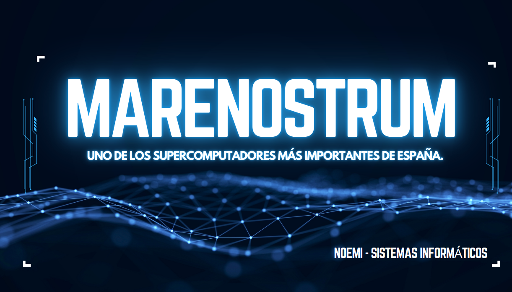
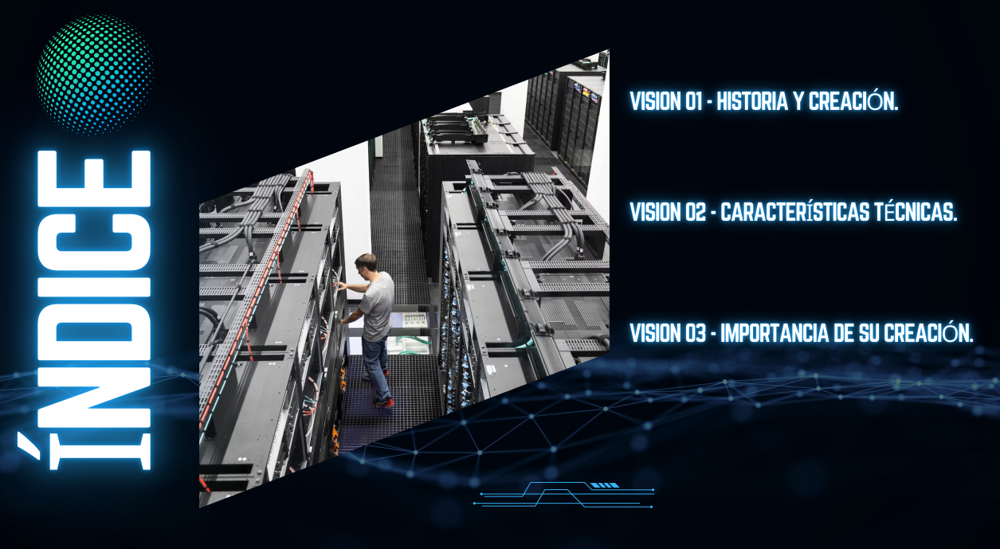
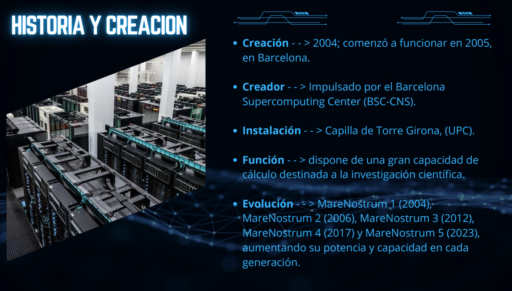
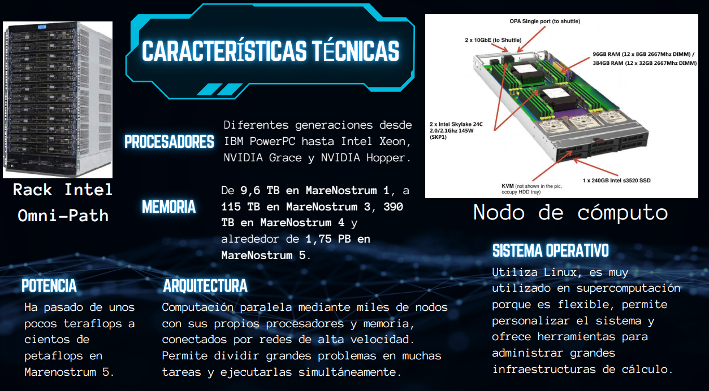
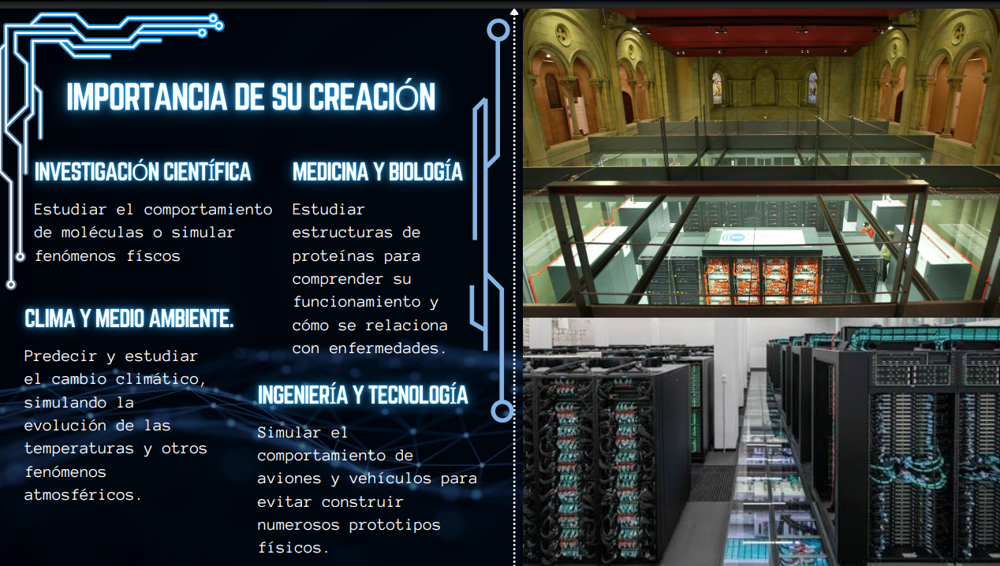

SUPERCOMPUTADOR MARE NOSTRUM
Uno de los supercomputadores más importantes de España.
SUPERCOMPUTACIÓN / CIENCIA / FUTURO
Una nueva dimensión de la computación, la investigación científica y la tecnología.
DESCUBRIR EL PROYECTO →01 / INTRODUCCIÓN
MareNostrum es uno de los supercomputadores más destacados de Europa, ubicado en el Barcelona Supercomputing
Center – Centro Nacional de Supercomputación (BSC-CNS).
Esta infraestructura tecnológica de alto rendimiento está diseñada para realizar cálculos extremadamente
complejos y procesar enormes volúmenes de datos a una velocidad extraordinaria, superando ampliamente las
capacidades de un ordenador convencional.
Su potencia de cálculo permite abordar algunos de los grandes desafíos científicos y tecnológicos de nuestro
tiempo, desde la simulación del cambio climático y la investigación biomédica hasta el desarrollo de
inteligencia artificial, la física y el estudio de fenómenos complejos.
Más allá de su capacidad técnica, MareNostrum representa la unión entre innovación, conocimiento e
investigación. Gracias a la supercomputación, los científicos pueden analizar escenarios, realizar
simulaciones avanzadas y obtener resultados que contribuyen al progreso de la sociedad.
MareNostrum no es simplemente un ordenador de gran potencia: es una herramienta estratégica para ampliar los límites de la ciencia, impulsar la innovación y construir el futuro de la investigación.
02 / PRESENTACIÓN VISUAL
Diapositivas informativas sobre MareNostrum.

Uno de los supercomputadores más importantes de España.

Vision 1 - Historia y creación.
Vision 2 - Características técnicas
Vision 3 - Importancia
de su creación.

MareNostrum nació en 2004 en el Barcelona Supercomputing Center (BSC). Actualmente cuenta con cinco versiones.


La creación de MareNostrum supuso un gran avance para la ciencia y la investigación. Su potencia permite estudiar enfermedades, analizar el ADN, investigar nuevos tratamientos médicos y comprender mejor el cambio climático. También ayuda a desarrollar inteligencia artificial y realizar simulaciones complejas. Gracias a la supercomputación, los científicos pueden obtener resultados más rápidos y contribuir al progreso de la sociedad.
03 / DATOS CLAVE
MareNostrum está formado por miles de procesadores y nodos conectados entre sí. Cuenta con memoria de gran capacidad y GPU que permiten realizar cálculos a gran velocidad.
Se utiliza para investigar enfermedades, analizar el ADN, estudiar el cambio climático y desarrollar inteligencia artificial. También permite realizar simulaciones científicas complejas.
MareNostrum impulsa los avances científicos y tecnológicos. Su potencia ayuda a descubrir nuevas soluciones, mejorar la medicina y afrontar los grandes retos del futuro.
04 / CONCLUSIÓN
MareNostrum es relevante porque permite realizar investigaciones científicas que serían muy difíciles con un ordenador convencional.
Ayuda a avanzar en la medicina, la biología, la inteligencia artificial y el estudio del cambio climático.
Gracias a su enorme capacidad de cálculo, los científicos pueden analizar grandes cantidades de datos y encontrar soluciones a problemas complejos.
Además, impulsa la innovación tecnológica y sitúa a España entre los países que contribuyen al desarrollo de la supercomputación en Europa.